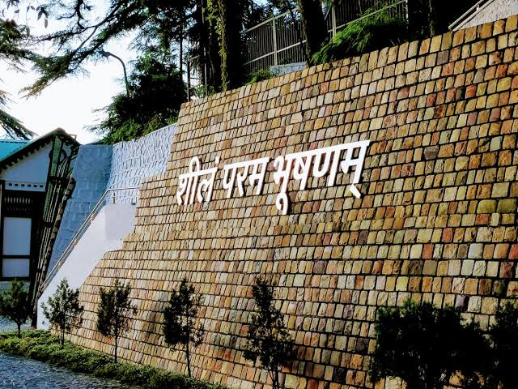

Well, I have here everything which is important for the preparation of the CSE examination. But as you know UPSC requires skills equally as knowledge with lots of determination. So here’s a question for you that do you want to join one of the greatest services of our country & serve our nation with pride, respect & honor? If yes then comment “yes I can do it” if no then also comment in the comments section below. This article contains a lot of information about civil service examination & from this you'll know how to clear your examination & what a civil servant looks like. This article also contains some success stories of our toppers that how they clear the exam & become a role model for every single aspirant who is willing to crack CSE examination. Content:-
- Structure (syllabus) of the examination
- Last year cut off
- Conclusion
Structure of the examination
When you want to clear any exam then you must have knowledge about what’s the pattern of the examination. First, know what UPSC wants from you or what type of person they appoint in the commission. “You can’t cross the sea merely by standing and staring at the water “ Simply if you want to crack this exam then first think like an officer & when you develop these qualities then definitely, you will clear this examination. Make your goals, make a schedule, do some exercise or meditation then read a lot because the syllabus of UPSC is very massive you must have knowledge of everything what’s happening around your country & world similarly. To clear UPSC you have to do smart & hard work both because the commission also wants from the aspirants that their future officers are smart & determined for their work. Now I am going to tell you what is the pattern & syllabus of CSE.So basically the Civil Service Examination pattern divided into three stages
Preliminary Examination
The preliminary exam consists of two objective type papers for a total of 400 marks & each paper has 100 multiple types of questions (200 marks for each paper). However preliminary examination is just a screening test for candidates both papers are qualifying in nature & their marks, not going to effect your final marks. This examination is all about checking your basic awareness only. There will be negative marking of one-third marks for wrong answers marked by a candidate & the medium of the question paper in both English and Hindi.Paper 1 (General Studies) 200 Marks /100 MCQ 2 Hour Paper 2 (CSAT) 200 Marks/100 MCQ 2 Hour - Current events of national and international importance
- History of India and Indian National Movement
- Indian and World Geography - Physical, Social, Economic Geography of India and the World
- Indian Polity and Governance - Constitution, Political System, Panchayati Raj, Public Policy, Rights Issues, etc.
- Economic and Social Development Sustainable Development, Poverty, Inclusion, Demographics, Social Sector initiatives, etc.
- General issues on Environmental Ecology, Bio-diversity and Climate Change - subject specialization not required.
- General Science
Paper l (General Studies)
- Comprehension
- Interpersonal skills including communication skills
- Logical reasoning and analytical ability
- Decision-making and problem-solving
- General mental ability
- Basic numeracy (numbers and their relations, orders of magnitude, etc.) (Class X level), Data interpretation (charts, graphs, tables, data sufficiency, etc. - Class X level)
Paper ll (CSAT)
Main Examination
The Main examination consists of a total of 9 papers in which 2 papers have a qualifying in nature. The main examination is the 2nd phase of the CSE examination only successfully qualifying candidates in the prelims exam would be allowed to write the CSE mains.